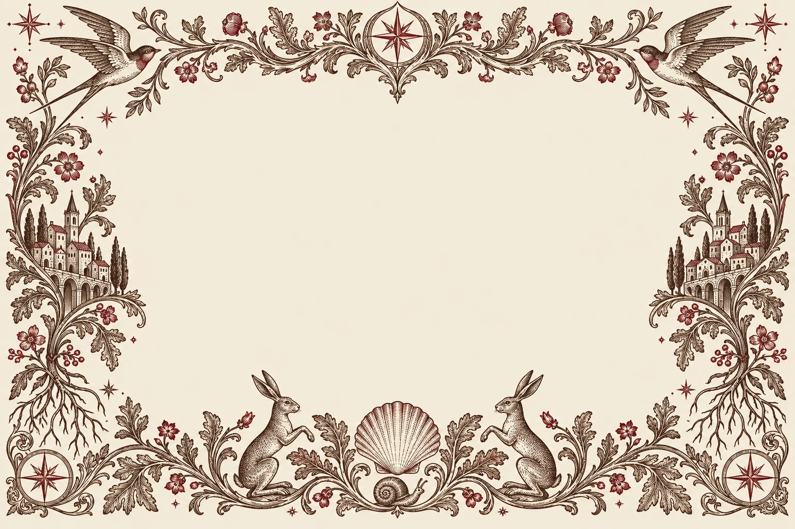

黃豆泥｜清邁遊牧觀察、加密社群三種落地實驗
講者為本場提供的兩篇文章。快閃城市／游擊實驗／新社會為講者的主觀分類；清邁描述是特定行程的田野觀察，不代表所有數位遊牧者。
無國界的遊牧：那些數位流動者的落地生根實驗
黃豆泥・飛地台灣季・倫敦・2026.09.20
講者為本場提供的兩篇文章。快閃城市／游擊實驗／新社會為講者的主觀分類；清邁描述是特定行程的田野觀察，不代表所有數位遊牧者。
海外微信、波士頓司機、雲林女兒、SCP、海棠與博物館志工依講者大綱保留為案例關鍵字。沒有補寫未提供的人物經歷、對話或身分。
黃豆泥，2025。取其制度分工、政府與平台的雙重身分管理，以及三個核心問題；不把文章的政策時點當成 2026 年最新狀態。
黃豆泥，典藏，2024-07-02。以資料消失、維護成本與自主網路為主；圖像沿用作者網站本地化原圖。
黃豆泥，典藏，2023-06-02。Elixus 的 IRC、部落格與茶館實踐；2001 年 Piraport 與 PiraGene 身分／版權藝術實驗。
黃豆泥，2026。使用既有簡報第 21–27 頁的五條逃脫路徑，及協議、營運與治理的區別；不直接轉錄書中長篇引文。
張寶成、黃豆泥合著，典藏，2024-03-29。雪景攝影：張寶成；NFT 圖：張寶成收藏，作品 ykxotkx；合照：原文標示 Nishikigoi NFT Discord；治理畫面：Nishikigoi NFT Snapshot。訪問僅半天，不據此推論長期人口或經濟效果。
MIT Press，1995。出版的是 C 原始碼，不是散發使用者私密金鑰。紙本出版與密碼軟體出口管制之間的張力，是本頁重點。
1996-02-08，EFF 保存之原文。簡報使用短引，其餘為講者對歷史宣言的提問。
作者記錄 2023 年 4–5 月在黑山 Zuzalu 的共居生活、課程、共餐與社群討論。頁面使用 Luštica Bay 月夜與 ZK 課程照片，圖／Cat Thu。
Andy Greenberg，2017-03-29。報導記錄 Taaki 在中東約 15 個月，離開前線後教開源軟體與網路、參與肥料工廠與太陽能研究，並協助設計技術教育課程。肖像攝影／Anastasia Taylor-Lind for WIRED。
說明護照、零知識證明與鏈上投票組件。文件列出 Russia2024、Iranians Vote、United Space。本文沒有找到足以確認「加泰隆尼亞 Rarimo 投票」的直接資料，故保留講綱關鍵字並註明。
加泰隆尼亞政府將 Vocdoni 列為區塊鏈成功案例，描述其可普遍驗證、去中心化、匿名且抗審查的投票基礎設施。與 Rarimo 是不同專案，不把兩者合併或視為受承認的國家選舉。
館方確認 DLØDM 的業餘無線電示範與 DARC 合作。志工爺爺是講者的個人見聞，未推定特定人的姓名。原大綱「火退族」按語意寫為「火腿族」。
以 Solaria 的稀疏人口、機器人勞動及遠距交往為文學對照；並非預測或現實社會統計。
2013 年繁體中文版，葉李華譯，ISBN 9789862621530。簡報並列英文版與台灣繁體中文版封面。
用於確認作品與情節。本頁不援引不同時代 Solaria 的人口數字，避免與後期《基地與地球》設定混淆。
1995 年原文，第 173 段。採用短引；中文為本簡報譯文。僅作批判性文本閱讀，不支持作者的暴力行動。
黃豆泥，文化前線 II 讀書會。保留 Susskind、Srnicek & Williams、Acemoglu / Autor / Johnson 的分歧，書中假設不當成已發生的實證結果。
2024 年館方文章。使用 2022 年 6 月電台照片，圖／Deutsches Museum, München；照片並非講者此次拜訪的紀錄。
十張圖由內建 imagegen 生成，為本簡報的概念插畫與裝飾，並非歷史文物、現場照片或特定人物的肖像。採平面線刻、暖白紙色與褐紅雙色。動物作為移動、結社與歸屬的視覺意象，未對人物作動物化分類。

Create an original fine-art copperplate print for an editorial lecture, inspired by 17th-century engraved book ornaments. Absolutely FLAT, front-facing graphic on uniform untextured warm ivory paper (#f1eadb). Two inks only: dark umber and restrained oxblood. Precise delicate engraved hatching inside shapes, generous clear negative space, elegant sharp silhouettes and refined botanical ornament. No photographic lighting, no gradients, no cast shadows, no three-dimensional scene or isometric perspective, no embossed look, no text, no letters, no watermark. Horizontal 3:2 composition. A flat symmetrical ornamental title-page FRAME. Two long-tailed swallows face inward near upper corners; stylized acanthus stems run down sides with tiny flat medieval village facades and roots interwoven; at bottom two heraldic hares and a snail flank an open ornamental shell. Tiny stars and compass marks at edges. The middle 65% is COMPLETELY EMPTY ivory paper to place a Chinese title. All motifs lie on one plane like a printed ex libris plate; formal, beautifully balanced, sparse fine lines, not a landscape scene. Image fills page but keep corners inside trim. Reimagine the supplied cover radically: remove globe, perspective landscape, giant tree, travelers and all volumetric rendering. Use only flat ornamental animals and botanical border.

Create an original fine-art copperplate print for an editorial lecture, inspired by 17th-century engraved book ornaments. Absolutely FLAT, front-facing graphic on uniform untextured warm ivory paper (#f1eadb). Two inks only: dark umber and restrained oxblood. Precise delicate engraved hatching inside shapes, generous clear negative space, elegant sharp silhouettes and refined botanical ornament. No photographic lighting, no gradients, no cast shadows, no three-dimensional scene or isometric perspective, no embossed look, no text, no letters, no watermark. Square composition. A single large garden snail in exact side profile carrying a tiny flat architectural house facade within its spiral shell. Two slender fern fronds curve around the snail. A small sun disk above, fine short ground line below. Charming unusual classical emblem of carrying one's home, much breathing room. Anatomical antique natural-history engraving meets renaissance printer's emblem. Isolated on solid ivory; no scene, no background elements.

Create an original fine-art copperplate print for an editorial lecture, inspired by 17th-century engraved book ornaments. Absolutely FLAT, front-facing graphic on uniform untextured warm ivory paper (#f1eadb). Two inks only: dark umber and restrained oxblood. Precise delicate engraved hatching inside shapes, generous clear negative space, elegant sharp silhouettes and refined botanical ornament. No photographic lighting, no gradients, no cast shadows, no three-dimensional scene or isometric perspective, no embossed look, no text, no letters, no watermark. Square composition. A circular celestial medallion: an unshaded full moon with fine engraved ornamental contours at center, two migrating swallows in perfect side profile curving in opposite directions around it, crescent wisps of fine clouds and small stars. Flat astronomical chart meets printer's ornament. Strong elegant negative space. No realistic moon sphere, no shadows. The birds should be large enough to read as exquisite engraved animals.

Original fine-art copperplate print for a classical editorial lecture. Square, flat front-facing graphic on uniform warm ivory (#f1eadb), dark umber ink plus tiny oxblood accents. Precise fine etched contours and hatching, antique natural history print meets Renaissance printer's emblem, ornamental and restrained. No text or letters, watermark, gradients, shadows, photographic lighting, dimensional scene, perspective landscape, or embossed effect. Plenty of quiet ivory around the motif. A fox with long elegant tail, exact side profile walking left, holding a thin leafy branch in its mouth. A delicate oval wreath of wild grasses surrounds it, small scattered compass stars. A flat wandering animal emblem, graceful, wild, intelligent. Fur rendered by fine short carved strokes.

Original fine-art copperplate print for a classical editorial lecture. Square, flat front-facing graphic on uniform warm ivory (#f1eadb), dark umber ink plus tiny oxblood accents. Precise fine etched contours and hatching, antique natural history print meets Renaissance printer's emblem, ornamental and restrained. No text or letters, watermark, gradients, shadows, photographic lighting, dimensional scene, perspective landscape, or embossed effect. Plenty of quiet ivory around the motif. A large raven in side profile perched on the edge of an open book seen as a flat symmetrical heraldic shape. Its wings partially open; in its beak an ornate small key; printed pages are tiny regular abstract hatch marks not writing. Two acanthus tendrils curl outward at base. Emblem of carrying knowledge and cryptographic privacy. Highly refined silhouette, strong negative space.

Original fine-art copperplate print for a classical editorial lecture. Square, flat front-facing graphic on uniform warm ivory (#f1eadb), dark umber ink plus tiny oxblood accents. Precise fine etched contours and hatching, antique natural history print meets Renaissance printer's emblem, ornamental and restrained. No text or letters, watermark, gradients, shadows, photographic lighting, dimensional scene, perspective landscape, or embossed effect. Plenty of quiet ivory around the motif. Two elegant koi fish swimming head to tail in a circular ring, seen from directly above, detailed fine scales and flowing fins. Around the ring, extremely delicate rice stalks and fine root tendrils weave into a wreath. Quiet empty center. Flat Japanese-European engraved book ornament, warm copper red koi patches with dark umber linework. No water background or depth.

Create an original sophisticated flat copperplate book illustration. Square print on uniform warm ivory paper (#f1eadb), fine dark umber engraved ink, tiny restrained oxblood accents. Ultra-delicate engraved linework, precise hatching only inside motifs. Frontal flat emblem composition with plenty of blank surrounding paper. No text, letters, watermark, gradient shading, cast shadows, 3D rendering, isometric or deep perspective. Classical natural-history and Renaissance printer's ornaments. A magnificent moth with symmetrically spread wings, seen directly above, wings richly patterned with engraved botanical shapes. Behind the moth a very thin pointed arched window contour, simple stars and a crescent moon. Two narrow laurel stems flank the lower edge. Contemplative, delicate emblem of an inner world, no human or religious symbol.

Create an original sophisticated flat copperplate book illustration. Square print on uniform warm ivory paper (#f1eadb), fine dark umber engraved ink, tiny restrained oxblood accents. Ultra-delicate engraved linework, precise hatching only inside motifs. Frontal flat emblem composition with plenty of blank surrounding paper. No text, letters, watermark, gradient shading, cast shadows, 3D rendering, isometric or deep perspective. Classical natural-history and Renaissance printer's ornaments. An elegant mechanical songbird in exact side profile inside a large oval decorative cage. Its wing is an engraved cutaway revealing delicate clockwork gears; cage door is open. Fine acanthus curls and a small unshaded sun disk crown the cage. Strange, intellectually intriguing, very refined flat black-line allegory, not a steampunk render, no metal gleam.

Create an original sophisticated flat copperplate book illustration. Square print on uniform warm ivory paper (#f1eadb), fine dark umber engraved ink, tiny restrained oxblood accents. Ultra-delicate engraved linework, precise hatching only inside motifs. Frontal flat emblem composition with plenty of blank surrounding paper. No text, letters, watermark, gradient shading, cast shadows, 3D rendering, isometric or deep perspective. Classical natural-history and Renaissance printer's ornaments. Five small swallows cluster around three clay nests attached to one long thin horizontal bare branch, branch length fills the lower middle width. Two birds are in flight above, three resting along branch. Fine intertwined ivy and tiny flowers, long tails. This is a classical ornithological printer's vignette of temporary gathering and shared homes. Light delicate linear silhouette, no scenery.

Create an original sophisticated flat copperplate book illustration. Square print on uniform warm ivory paper (#f1eadb), fine dark umber engraved ink, tiny restrained oxblood accents. Ultra-delicate engraved linework, precise hatching only inside motifs. Frontal flat emblem composition with plenty of blank surrounding paper. No text, letters, watermark, gradient shading, cast shadows, 3D rendering, isometric or deep perspective. Classical natural-history and Renaissance printer's ornaments. A flat formal botanical emblem of a young fig tree with a wide symmetrical canopy, tiny village facades tucked among its branches, a fan of fine exposed roots spreads below. Two small long-legged cranes face each other at the base. Everything the same plane like a heraldic pattern. Leaves and branches rendered by fine curving engraved lines; a thin decorative double oval encloses it, exceptionally elegant.
兩種未來觀各一頁，另以十頁整理 AI、工作與能動性的討論。
01｜還有多少「足夠的工作」？
02｜一份工作，是一束任務
03｜有工作搆不到，還是工作不夠？
04｜機器創造的繁榮，分到誰手上？
05｜少一點上班，空出來做什麼？
06｜一次活動，怎麼變成長期的力量？
07｜後工作的要求，與它的岔路
08｜什麼才算親勞工 AI？
09｜同一項技術，可以分成三條路
10｜帶著這些分歧，繼續討論